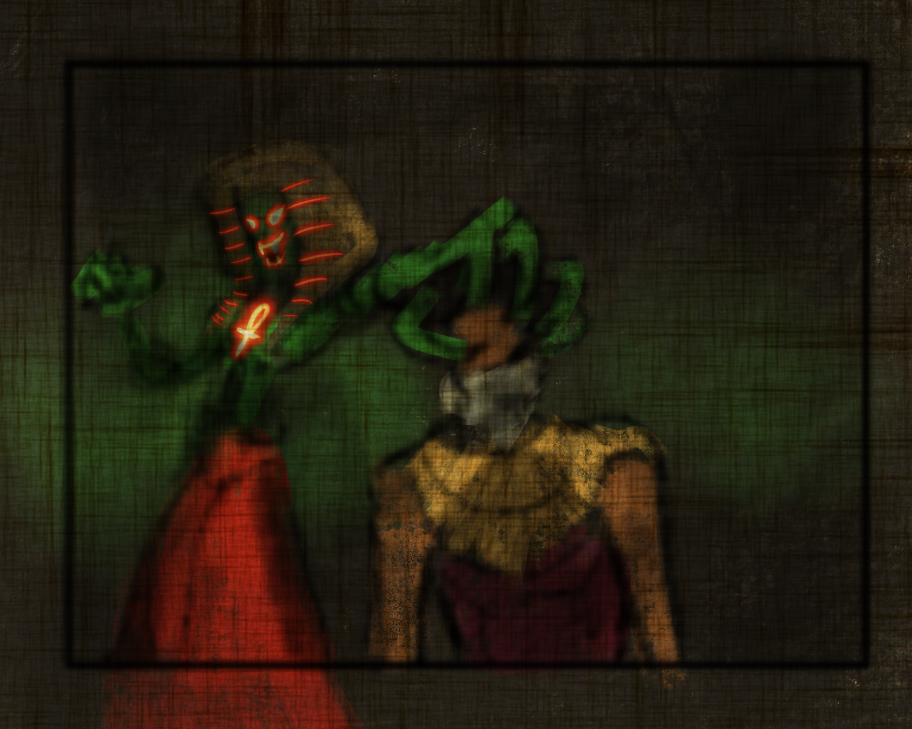

-
Adéntrate en La Pirámide
Los vampiros azotaron las tierras del Nilo durante décadas, pero gracias al poder mágico del Khopesh del faraón y su inquebrantable voluntad, consiguieron encerrarlos en las oscuras profundidades de su futura pirámide. Sin embargo, toda responsabilidad necesita un sacrificio. Es por esto que el faraón debe contener la epidemia usando magia y sangre. Inmortal nos cuenta la historia del último vástago del faraón. El último de un linaje de faraones cazadores de vampiros.
-
La creatividad nace de la mezcla consciente y un poco de locura.
Esta premisa ha guiado el proyecto durante todo su desarrollo, nos atrevimos a destripar los orígenes del mito del vampirísmo guiados hasta una de las cunas de la cultura: el Antiguo Egipto. Hemos creado un mundo completamente nuevo, unido a una historia que te mantendrá fijado a la silla, ¿te atreves a adentrarte en la más oscura de las aventuras?
- 
-
¿Por que en Unity3D?
Inmortal ha seguido un largo historial de versiones hasta el producto final del que puedes disfrutar hoy en día. Desde sus comienzos en Gamemaker se han conseguido implementar nuevas habilidades, poderosos enemigos y niveles que te dejarán sin aliento. Unity ha sido el motor que nos ha brindado mejores herramientas y soluciones para conseguir nuestros objetivos con el juego. .
-